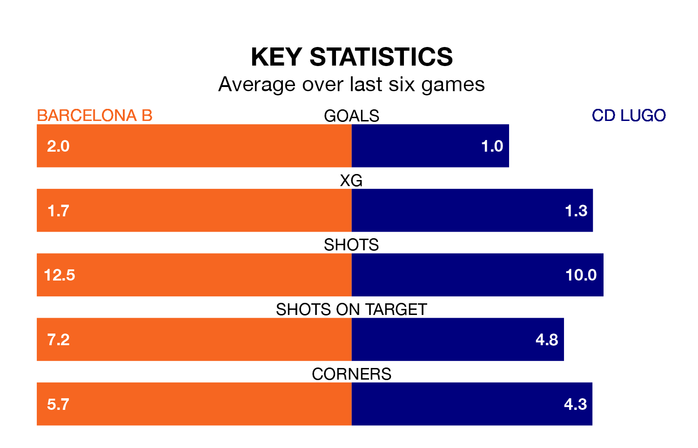

Barcelona B host CD Lugo in Sunday's match at Mini Estadi looking to bounce back from defeat last time out in Primera Division RFEF Group 1.
Barcelona B, who sit second in the league after 32 games, fell to a 4-1 away defeat to Unionistas de Salamanca CF on April 14.
They face a Lugo side who also lost their last match, a 4-1 defeat to Celta de Vigo B, and who sit 10th in the table.
With 50 goals in 32 games so far this season, Barcelona B are the league's third-highest scorers with 1.6 goals per game. And they are conceding at an average rate, letting in 36 goals at a rate of 1.1 per game.
Lugo, meanwhile, are below average scorers, with 0.8 goals per game, compared to a league average of 1.1. They have conceded 1.2 goals per game.
In Pau Victor, the home side have the league's sharpest shooter so far this season. He has notched 12 goals in 21 appearances.
His goal rate of one every 157 minutes is quicker than that of Luis Alfonso Ledesma Galán, the visitors' top scorer with a goal every 278 minutes, and a total of six goals in 21 games.
Barcelona B are in good form in Primera Division RFEF Group 1, with four wins and a draw from their last six games.
With a win and two draws over that period, Lugo's form is much worse – they have taken five points from 18, compared to Barcelona B's 13.
Updated: 11:31 (UTC), 15/04/24